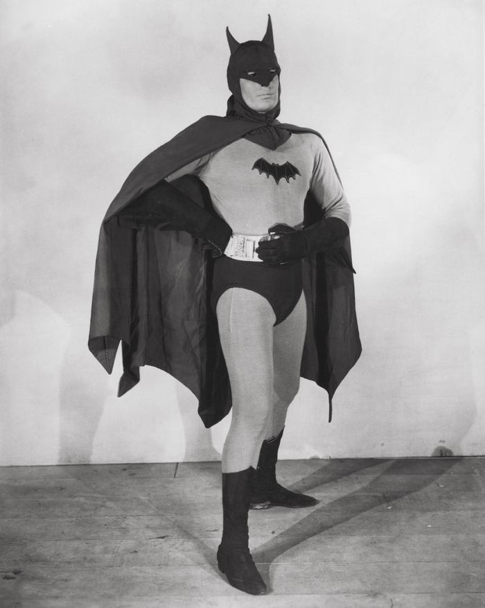
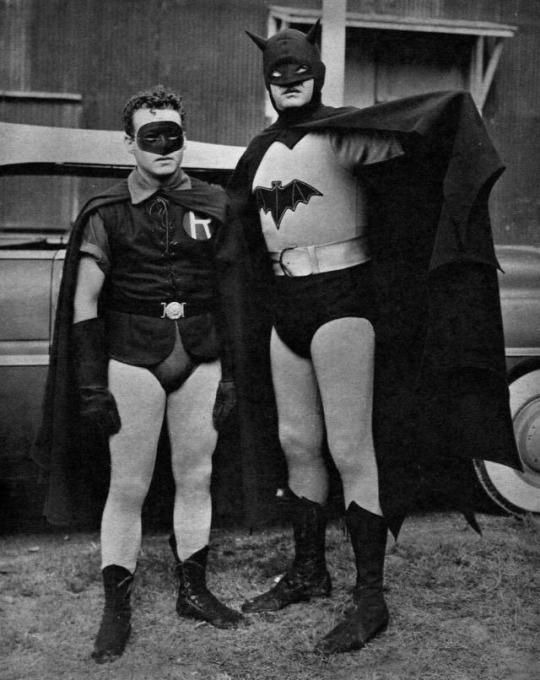
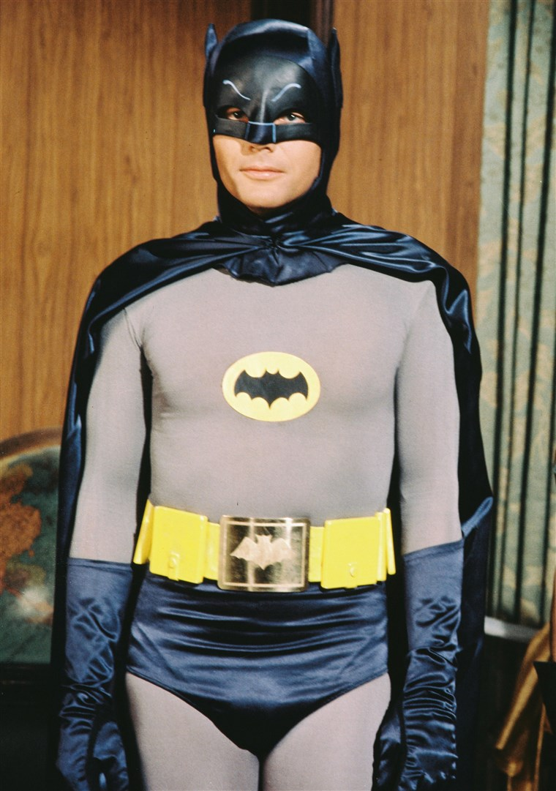
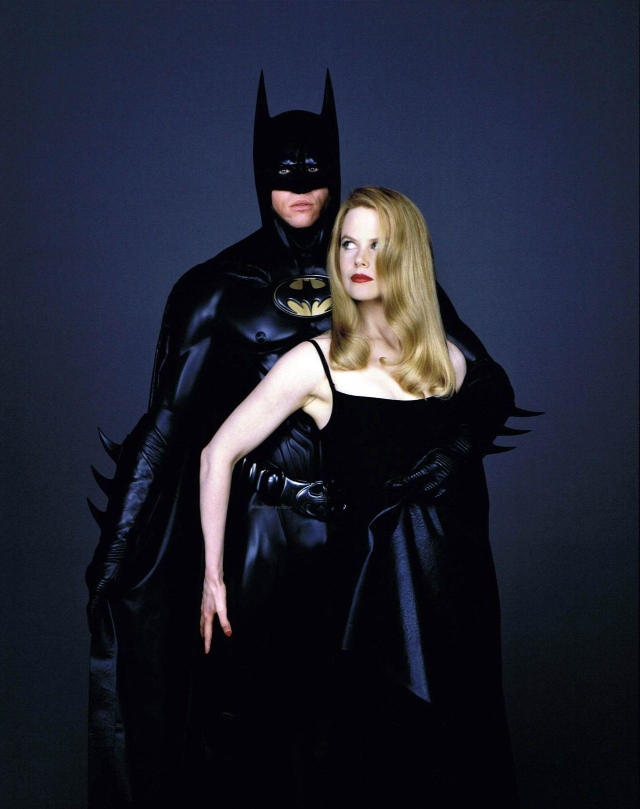
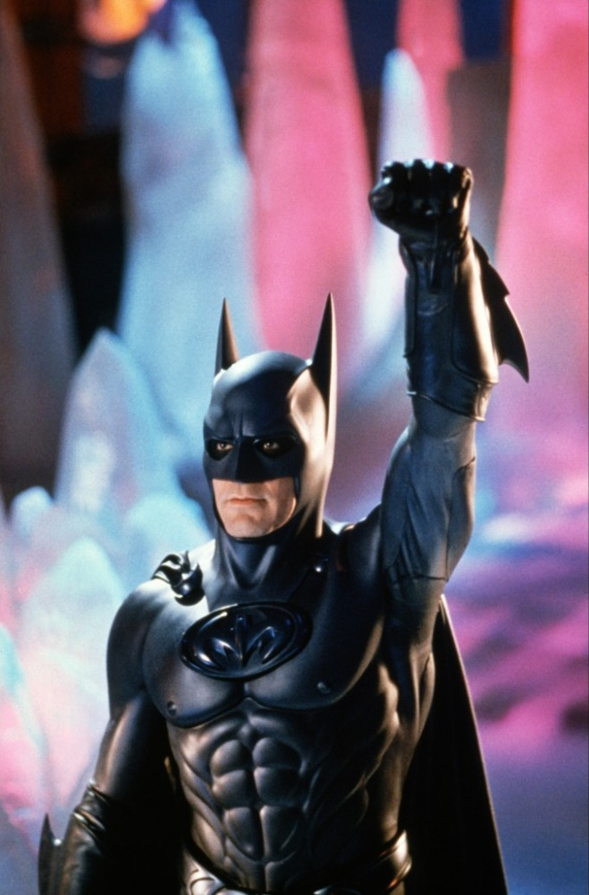
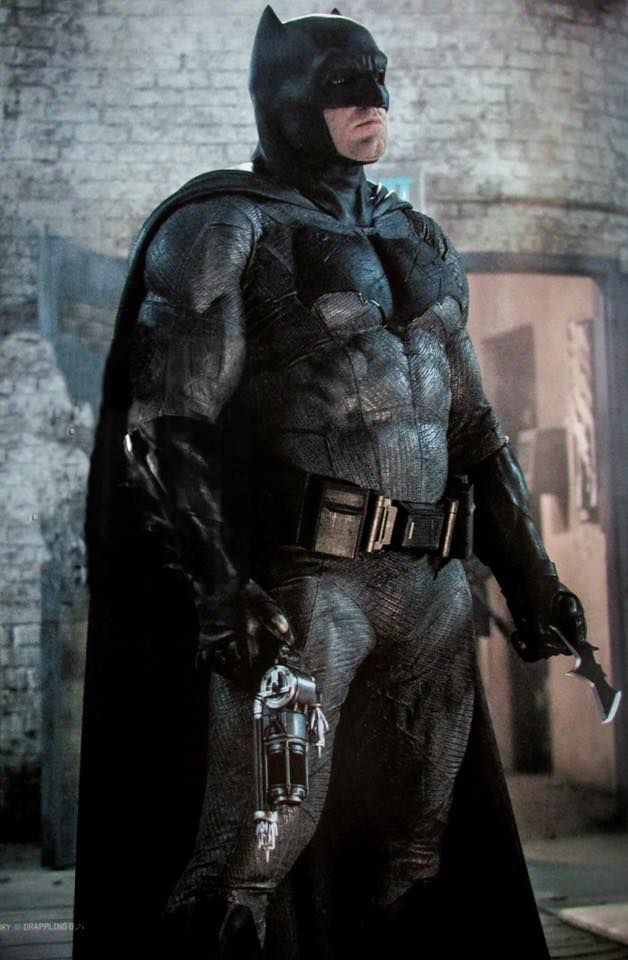
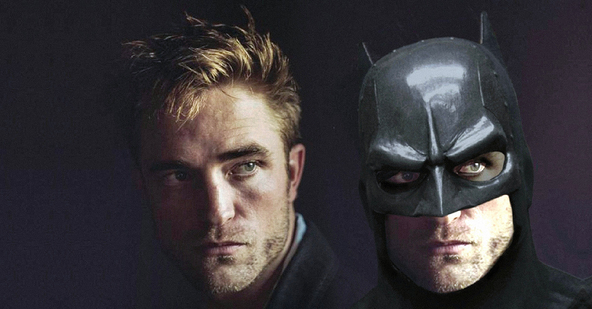

У 1943 році Бетмен вперше з’явився на екранах кінотеатрів у форматі 15-серійного серіалу. Це був досить типовий проєкт для свого часу. Тривала Друга світова війна, і, як багато інших героїв на кшталт Тарзана чи Супермена, Бетмен виконував пропагандистську роль: він був агентом на службі держави, що протистояв японському шпигуну доктору Дака.
«Бетмен» 1943 року мало нагадував перші комікси, у яких дотримувалися досить похмурого тону. Це був пропагандистський серіал для дітей і підлітків із незграбним Бетменом та кумедно-нелогічними бойовими сценами. Однак, яким би невдалим не здавався образ Бетмена у виконанні Льюїса Вілсона, він сильно вплинув на однойменний серіал і перший повнометражний фільм про Бетмена 1960-х років.

«Бетмен і Робін» — другий кіносеріал про Бетмена. Значною мірою це історія про повернення Бетмена з війни до Готема та його боротьбу зі злочинністю. Тоді у нього був лише один головний ворог — Чаклун (Wizrad), який викрав у дослідницької компанії пристрій, здатний переміщувати будь-який предмет у радіусі 50 миль.
Роберт Лаурі — досить пристойний Бетмен, особливо з огляду на епоху. Він був набагато кращим актором, ніж Вілсон, значно органічніше виглядав у екшен-сценах і добре пасував на роль Брюса Вейна — тобто нудьгуючого багатого плейбоя.
Втім, із «багатством» у обох серіалах 40-х не склалося, оскільки ці проєкти знімали швидко й дешево.
Епізоди обох серіалів закінчуються кліфгенґерами у класичному сенсі: наприклад, Бетмен може йти по тросу з дівчиною на плечах і за мить до кінця епізоду зірватися вниз. Або опинитися замкненим у літаку, що вибухає. А вже в першій сцені наступного епізоду глядачеві показують, як йому вдалося уникнути смерті.
До речі, костюми Бетмена в обох серіалах були ще тканинними, тому героєві було набагато зручніше з ними поводитися. Наприклад, у серіалі 1949 року Брюс Вейн всюди возить із собою костюм Бетмена й у разі потреби переодягається просто на задньому сидінні автомобіля.

У 1950-х роках ринок коміксів пережив величезний спад, а в 1954 році з’явився Кодекс коміксів — фактично цензура, яка регулювала, що можна писати й показувати, а що — ні. Найсильніший удар припав на горор-комікси, але дісталося й Бетмену.
Однією із причин створення Кодексу стала книга «Спокушання невинних» Фредріка Вертема, в якій автор критикував насильство в коміксах. Він стверджував, що діти схильні наслідувати його в реальному житті. Безпосередньо Бетмену дісталося від Вертема за нібито «гомосексуальні» відтінки у стосунках із Робіном.
Під впливом Кодексу у другій половині 1950-х комікси про Бетмена стали легшими за змістом, а автори почали вводити жіночих персонажів (наприклад, Бетвумен), щоб уникнути подібних звинувачень. Однак до початку 60-х продаж все одно впав до катастрофічного рівня.
У 1964 році в DC Comics прийшов новий редактор серії — Джуліус Шварц. Період 1964—1968 років відомий як «новий вид» Бетмена. Дизайн костюма змінили, історії повернулися до класичних детективів, але з ще легшим і майже самоіронічним тоном. Саме в цій стилістиці і створили серіал «Бетмен» 1966–1968 років і перший повнометражний фільм 1966 року.
Перший повнометражний «Бетмен» — це майже попарт кінокоміксу, знятий практично без спроб зупинятися і з чітким розумінням, чим він є насправді.
І хоча серед фанатів героя досі є пуристи, які не визнають Веста, його Бетмен традиційно входить до трійки найкращих втілень у кіно.

Одностайно визнаний одним із найкращих Бетменів у кіно, Кітон до цієї ролі був переважно комедійним актором. Новина про його призначення викликала чимало скепсису й обурення. Однак фільм 1989 року став надзвичайно успішним, а його сиквел, хоч і зібрав значно менше, вважається одним із найкращих фільмів про Темного Лицаря.
Фільм «Бетмен повертається» поєднав притаманну Бертону візуальну вишуканість і псевдоготичний всесвіт Готема та його героя. У цій стрічці зійшлися візуальна виразність коміксу та досить глибока драма. Кітон органічно вписався у цей світ — причому однаково переконливим він був і в ролі Брюса Вейна, і в образі Бетмена.
Успіх «Бетмена» 1989 року знову змусив босів Голлівуду замислитися над тим, що індустрія коміксів — це золота жила. Вперше це сталося після «Супермена» 1979 року, але тоді це не спричинило хвилю екранізацій. Проте вже після «Бетмена» в 90-х почали знімати значно більше фільмів про супергероїв, хоча вирішальним і переломним для індустрії зазвичай називають успіх «Людини-павука» Сема Реймі.

Після значно меншого касового успіху фільму «Бетмен повертається» студія Warner захотіла більш легке видовище, тому Тім Бертон залишився лише в ролі продюсера, а режисером призначили Джоела Шумахера. Із проєкту також пішов Майкл Кітон, якому не сподобався напрям, у якому рухався новий фільм. Так Бетменом став Вел Кілмер, який тоді перебував на піку своєї популярності.
Його зазвичай ставлять десь наприкінці рейтингів найкращих Бетменів, але це не зовсім його провина. Кілмер грає персонажа абсолютно серйозно, тоді як сам фільм «Бетмен назавжди» йде на територію кітчу майже як у стилі 60-х.
Єдине, де Кілмер дійсно може реалізувати себе як драматичний персонаж — це у стосунках із психологинею Чейз Мерідієн (Ніколь Кідман), із якою в нього роман і як у Бетмена, і як у Брюса Вейна. Тож нерідко можна почути думку, що Кілмер — непоганий Брюс Вейн, але нікудишній Бетмен.

Після касового успіху стрічки «Бетмен назавжди» студія вирішила продовжувати в тому ж стилі й залишила режисером Джоела Шумахера. Але Бетмен знову змінився — замість складного в роботі Кілмера запросили Джорджа Клуні. «Бетмен і Робін» вважається найгіршим фільмом про Бетмена, але якимось чудом стрічка виглядає досить злагодженою.
Якщо в попередньому фільмі актори тягнули кожен у свій бік, то тут усі чудово розуміли, що і кого вони грають. Включно з Арнольдом Шварценеггером, який виконав роль головного лиходія — Містера Фріза.
Бетмен у виконанні Джорджа Клуні належить до кітчевої традиції. Причому, здається, він навмисно посилив це відчуття, оскільки, за його ж словами, грав Бетмена так, ніби той був геєм.
Більш ніж через 20 років після виходу стрічки, напевно, найчастіше згадуваний елемент у «Бетмені і Робіні» — це наявність сосків на костюмі Бетмена.

Крістіан Бейл для багатьох, якщо не найкращий Бетмен, то точно входить до трійки найкращих. Проте беззаперечним залишається факт, що три фільми Крістофера Нолана, як до них не ставитися, стали одними з найбільш впливових у новітній історії кінокоміксів і задали моду на більш реалістичний та похмурий підхід до зображуваного всесвіту.
Бетмен Крістіана Бейла — яскравий приклад сильної залежності актора від того, ким є його персонаж і як він прописаний. Бетмен Нолана не з тих, хто постійно перемагає: сценаристи наділили його як сумнівами, так і важким минулим, тінь якого падала далеко не на кожного Бетмена. Бейл грає передусім людину, яка одягає костюм героя, а не героя, що ховається за образом Брюса Вейна.
Бейл може бути визнаний загалом хорошим Бетменом у всесвіті Нолана. У деяких елементах образу Бейл, котрий полюбляє ефектні деталі, занадто старається, а його «бетменівський» голос — один із явних переборів. Брюс Вейн має змінювати голос, коли в костюмі, але бейлівського Бетмена з його хриплим риком можна сміливо брати вокалістом у дет-метал-групу.

Бетмен Бена Аффлека припав на той період, коли розширений всесвіт DC відчайдушно намагався змагатися з фільмами всесвіту Marvel — і програвав у кожному раунді з нокаутом. Бетмен був одним із головних героїв цього всесвіту, але відтоді, як було оголошено про участь Аффлека, він так і не отримав сольного фільму. Спочатку картина планувалася ще у 2016 році, причому знімати її мав сам Аффлек, який прийшов у франшизу не просто як актор, а вже у статусі оскароносного режисера фільму «Арго».
Його образ у фільмах, мабуть, найбільше орієнтований на серію Френка Міллера, де Бетмен був літнім і втомленим чоловіком. Фільми про створення Ліги справедливості неодноразово підкреслюють, що Брюс Вейн / Бетмен не має надздібностей. Його персонаж найбільш близький до глядачів (принаймні тим, що в нього теж немає суперсил). Він найуразливіший і найбільш людяний.
З іншого боку, у цих фільмах Аффлек робить неймовірні, навіть для свого персонажа, речі, а виглядає досить монструозно у своєму костюмі, який часто іронічно порівнювали з «мішленівською людиною».

Роберт Паттінсон зіграв Брюса Вейна (Бетмена) у фільмі «Бетмен» (2022) режисера Метта Рівза. Його версія супергероя — це молодий, емоційно нестабільний та гнівний месник, який лише на початку свого шляху, а сама стрічка виконана в похмурому жанрі нуарного детективу.
Паттінсон закріпив за собою образ Темного лицаря, і він повернеться до цієї ролі у майбутньому сиквелі франшизи.
